1. Before you start
There are two builds of the one app.
| Build | Goes to | File | Updates itself? |
|---|---|---|---|
playRelease | Google Play (Android TV and Google TV only) | AAB (.aab) | No. Google Play updates it. |
siteRelease | The website and the Amazon Appstore | APK (.apk) | Yes, from the website. A copy from the Amazon Appstore is updated by Amazon. |
- The release key is
D:\Keys\the-display-solution-release.jks. Its passwords belong to the owner. Ask the owner for them, and never put them in git, a chat or an email. - Every file must be signed with this same key. A TV that has the app accepts an update only from the same key.
- Open the project in Android Studio:
D:\AndroidStudioProjects\TheDisplaySolutionPlayer.
2. Raise the version
Every new release needs a higher version code. A store refuses a code it has seen, and a TV installs nothing older.
In app/build.gradle.kts, raise versionCode by exactly one, and change versionName
to the name people read:
versionCode = 2 // was 1: always +1
versionName = "1.1" // what the TV and the stores showThen press Ctrl + Shift + O (Sync Project with Gradle Files), and commit:
Version 1.1 (versionCode 2): what changed.
3. Build the Google Play file (AAB)
Android Studio's signing wizard. It takes about a minute.
- Click the main menu (the three lines at the top left).
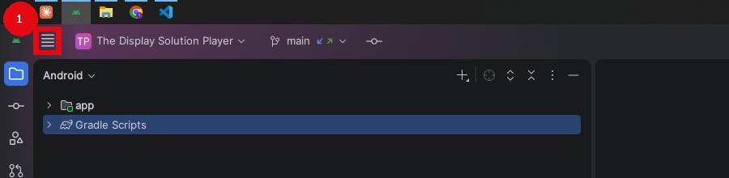
- Click Build, then Generate Signed App Bundle or APK… (box 3).
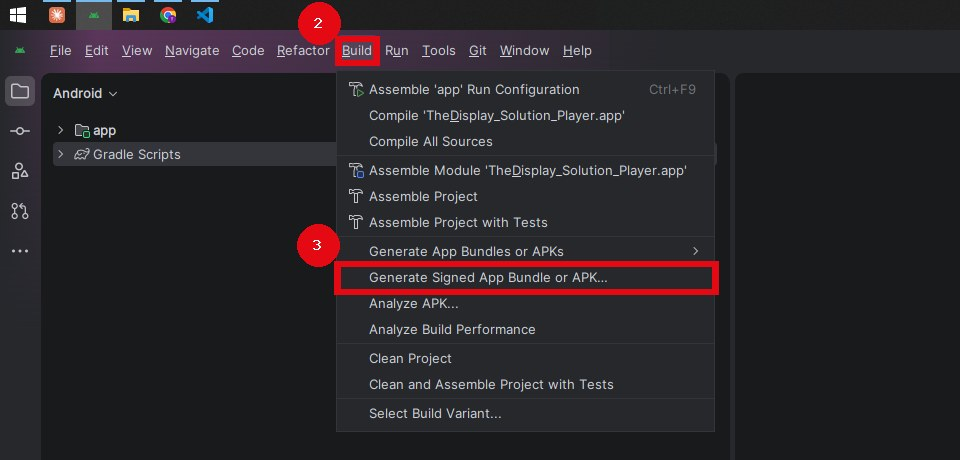
- Choose Android App Bundle (box 4), then click Next (box 5).
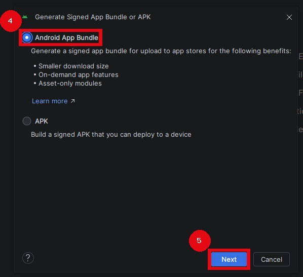
- Check the key:
- Key store path (box 6) is
D:\Keys\the-display-solution-release.jks. If it is empty, click Choose existing… and pick that file. - Type the Key store password and the Key password (box 7).
Key alias is
thedisplaysolution. - Click Next (box 8).
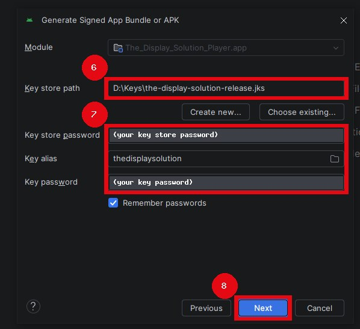
The password fields are covered in this picture. Only the owner knows the passwords.
- Key store path (box 6) is
- Click playRelease (box 9), so that only that row is selected, then click Create (box 10).
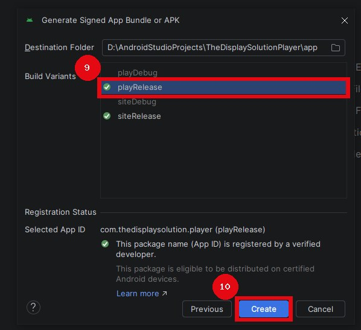
- When the build ends, Android Studio shows a message at the bottom right. Click its locate link: Windows
opens the folder with the file:
app\play\release\app-play-release.aabinside the project. This is the file you upload to Google Play (step 7).
4. Build the website and Amazon file (APK)
The same wizard, with two changes.
- Open the wizard as in steps 1 and 2 above. Choose APK (box 4), then click Next (box 5).
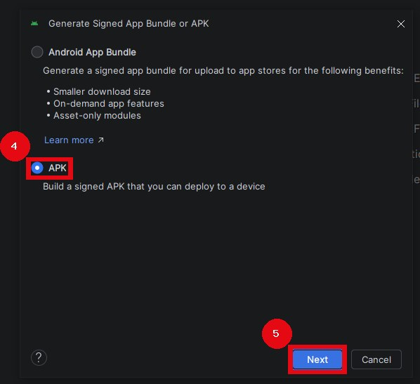
- Fill in the key the same way, then click Next.
- Click siteRelease (box 9), then click Create (box 10).
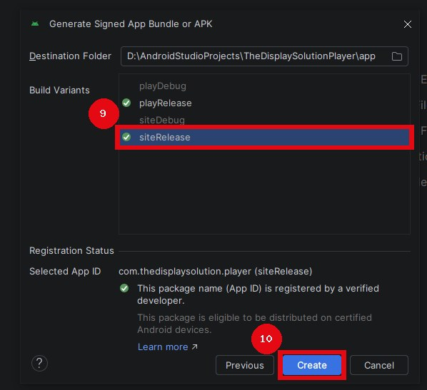
- Click locate in the message at the bottom right: the file is
app-site-release.apk, inside the project'sapp\site\releasefolder. Upload this one file to the website (step 5) and to Amazon (step 6).
Optional: build both files from the command line
The same two files without the wizard, for a developer who prefers a terminal.
- Copy
keystore.properties.exampletokeystore.propertiesin the project's root and fill in the key's path and passwords. Git ignores this file: never commit it. - Run, with Android Studio's own Java:
Lint must say 0 errors. The files areset JAVA_HOME=C:\Program Files\Android\Android Studio\jbr gradlew lintSiteDebug lintPlayDebug assembleSiteRelease bundlePlayReleaseapp\build\outputs\apk\site\release\app-site-release.apkandapp\build\outputs\bundle\playRelease\app-play-release.aab. - Check the APK's signature: the signer must be
CN=The Display Solution.%LOCALAPPDATA%\Android\Sdk\build-tools\36.0.0\apksigner verify --print-certs app\build\outputs\apk\site\release\app-site-release.apk - Before uploading, try both builds on the Android TV emulator. Hold Back for five seconds to open the app's menu, then press Check for updates. The site build asks the website. The play build says Google Play keeps it up to date.
5. Publish on the website
Every TV that installed the app from the website is then offered the update.
- Sign in at sign.thedisplaysolution.com as the super admin, and open Developer (box 1). Only the Super-Admin role has this page.
- Drop
app-site-release.apkon the App file box, or click choose a file (box 2). The page reads the version from the file. - Write a sentence or two under What's new (box 3). The TV shows it with the update.
- Click Publish Version (box 4).
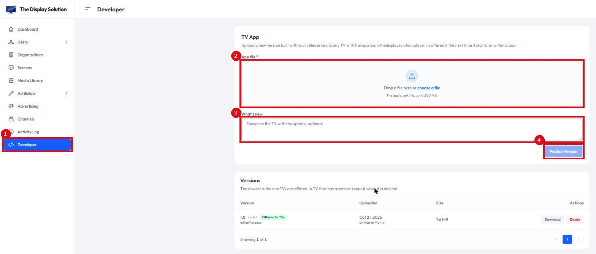
The new version appears at the top of Versions as "Offered to TVs". Each TV offers "Update available" the next time it comes to the front. Android asks for one press on the TV to install it.
6. Publish on the Amazon Appstore
Fire TV gets the app here. Amazon reviews each version, usually within a few days.
- Open the Amazon Developer Console.
On The Display Solution, click the menu icon (box 1), then Add Upcoming Version (box 2).
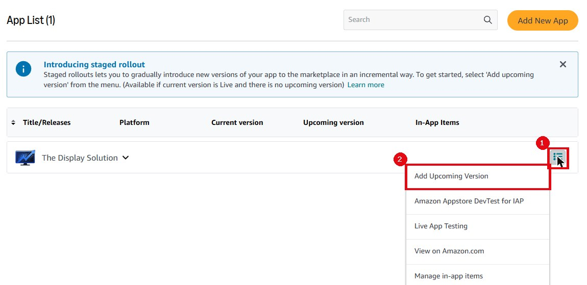
- Under App Files, upload the same
app-site-release.apk. Keep the devices as they are: Fire TV only, no tablets. - In the listing, change only what changed: What's new, and screenshots if the look changed.
- Paste the reviewer's testing instructions again just before Submit. The console forgets them when you leave that step. Ask the owner for the text and the test account.
- Click Submit. When Amazon approves it, every Appstore copy updates by itself.
7. Publish on Google Play
Android TV and Google TV get the app here. Google reviews each release.
- Open Play Console → The Display Solution →
Test and release (the rocket, box 1).
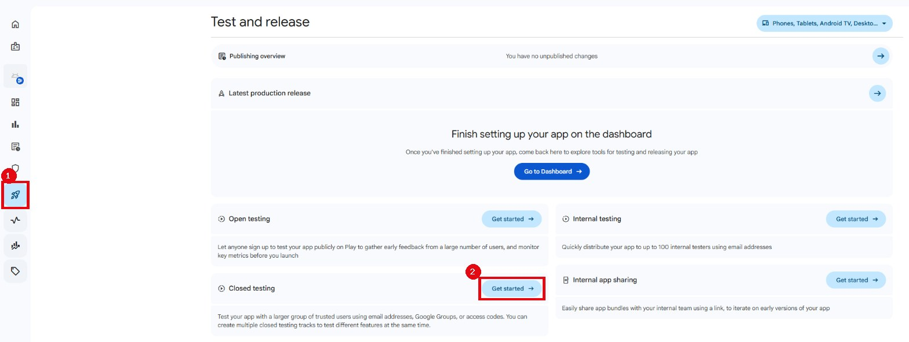
- Choose the track:
- Closed testing (box 2) until Production is unlocked. A new personal account needs 12 testers opted in for 14 days in a row first.
- Production after that.
- Click Create new release. Upload
app-play-release.aab, write the release notes, then click Next.Google signs the app on Play with a key of its own (Play App Signing), and the release key is the upload key. Play's automatic protection is turned off for this app on purpose (2026-10-26): it needs Android 7 or newer, and the app supports Android 6. Leave it off, or the upload is refused.
- Click Save, then Review release, then Start rollout. When Google approves it, every Play copy updates by itself.
8. Give a new developer access
Give each person their own login, never a shared password, and remove the access when they leave.
Google Play Console
- Open Play Console → Users and permissions, then click
Invite new users (box 1).
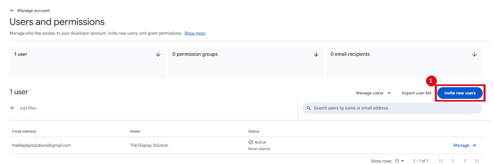
- Type their email address. Under App permissions, add The Display Solution, and give:
- Release to production, exclude devices, and use Play App Signing
- Release apps to testing tracks
- Manage testing tracks and edit tester lists
- Edit store listing, pricing and distribution
- View app information
- Click Invite user. They accept the email with the same address.
Amazon Developer Console
- Open My Settings (box 1), then User Permissions (box 2).
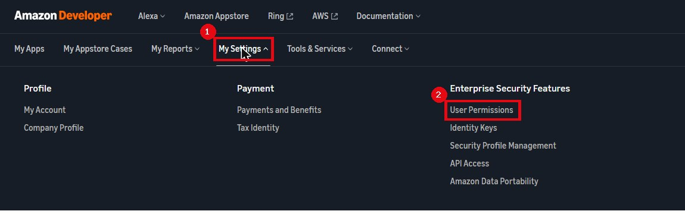
- Click Add New (box 3). Type their name and email, and choose the role Developer.
Keep Administrator for the owner: it also manages users and payments.
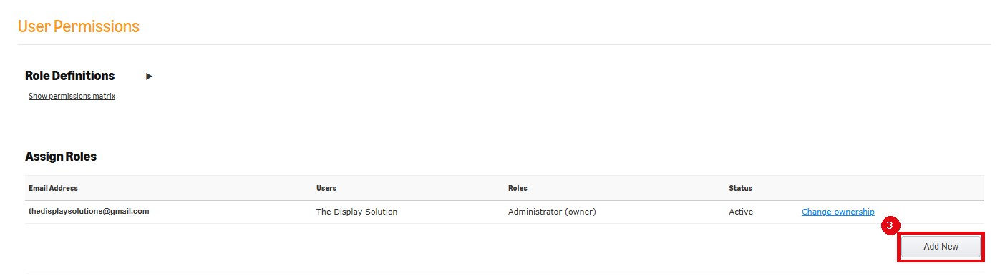
GitHub (the code)
On the repository thedisplaysolution-android: Settings → Collaborators →
Add people → their GitHub name → role Write.
The release key
Hand over the .jks file and its passwords only to someone the owner trusts to sign releases, in person or
through a password manager, never by email or chat. Keep a backup of the key: if it is lost, no update can reach a TV that
installed the app from the website. On Google Play, the owner can ask Google to reset a lost upload key
(Play Console → Test and release → App integrity).